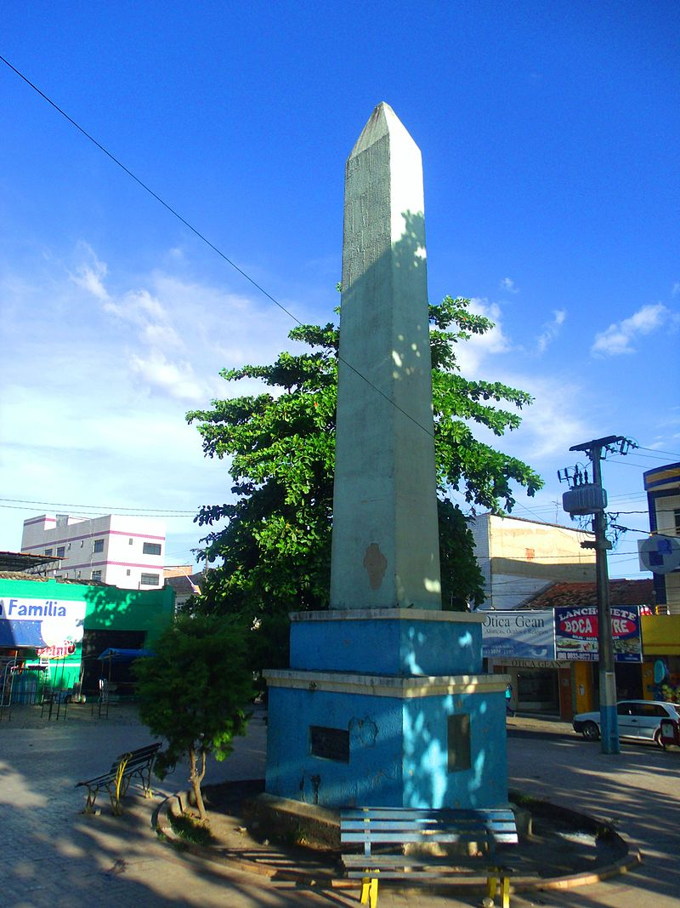
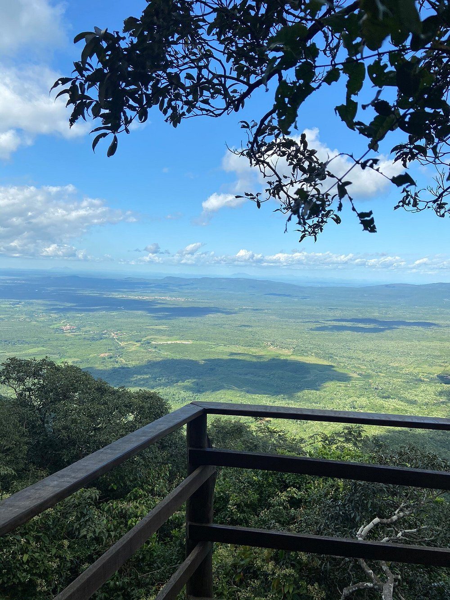

Geoinfos
Informações técnicas sobre relevo, população, IDH etc.
| INFORMAÇÕES | |
|---|---|
| Municípios limítrofes | Norte: Ibiapina, Leste: Graça, Sul: Guaraciaba do Norte, Carnaubal, Oeste: Piauí |
| Fundação | 25 de novembro de 1873 (147 anos) |
| Área total | 338,210 km² |
| Clima | Tropical úmido de altitude |
| IDH | 0,611 — médio |
| PIB | R$ 432mil |
| INFORMAÇÕES TERRITORIAIS | |
|---|---|
| Número de habitantes | 50.100 habitantes |
| Superfície de São Benedito |
33 824 hectares
338,24 km² (130,60 sq mi) |
| Densidade populacional | 148,1 hab./km² |
| Altitude de São Benedito | 903 metros de altitude |
| Coordenadas geográficas decimais |
Latitude:
-4.04428
Longitude: -40.8679 |
| Coordenadas geográficas sexagesimais | Latitude: 4° 2' 39'' Sul , Longitude: 40° 52' 4'' Oeste |
| INFORMAÇÕES DO MUNICÍPIO | |
|---|---|
| Endereço da Prefeitura Municipal de São Benedito |
Fortaleza
Prefeitura de São Benedito
Rua Paulo Marques, 378 SÃO BENEDITO - CE, 62370-000 Brasil Work +55 88 3626-2150 Fax (88) 3626-2150 |
| Telefone da prefeitura |
(88) 3626-1347
Internacional: +55 88 3626-1347 |
| Fax |
(88) 3626-2150
Internacional: +55 88 3626-2150 |
| Endereço eletrônico da prefeitura |
Não disponível
|
| Site oficial do município | saobenedito.ce.gov.br |
| INFORMAÇÕES DO ADMINISTRATIVAS | ||
|---|---|---|
| Prefeito de São Benedito | SAUL LIMA MACIEL | |
| Partido politico | PDT | |
| INFORMAÇÕES DE TRANSPORTE | |
|---|---|
| Transporte urbano disponível | - |
| Aeroporto |
Aeroporto Internacional Pinto Martins
126 km
Aeroporto de Sobral
71.4 km
Aeroporto Internacional Prefeito Dr.João Silva Filho
160.1 km
|
| INFORMAÇÕES DE DISTÂNCIA A OUTRAS CIDADES | ||
|---|---|---|
| São Paulo : 2258 km | Rio de Janeiro : 2114 km | Brasília : 1518 km |
| Salvador : 1027 km | Belo Horizonte : 1787 km | Manaus : 2131 km |
| Curitiba : 2544 km | Fortaleza : 261 km mais perto | Goiânia : 1679 km |
| Belém : 896 km | Porto Alegre : 3091 km | Guarulhos : 2238 km |
| Campinas : 2203 km | São Luís : 418 km | Recife : 799 km |
| Distância calculada em linha reta! | ||
Fonte: Wikipedia e Cidade Brasil
História
Conheça mais sobre a história de São Benedito.
Chamou-se primitivamente Rio Arabê ou das baratas, segundo versão tupi, tendo como referência o riacho (Século XVII). Nessa época, tinham-se por habitantes somente Tapuias, marcando um dos principais agrupamentos indígenas. Desse referencial se tem notícia a contar do ano de 1604, quando Pero Coelho de Souza, após subjugar os Tabajaras da Ibiapaba, estendeu suas conquistas ao longo da Grande Serra da Ibiapaba, montando seu quartel-general nesse local. Comandou, então, o restante de suas operações de conquista, reunindo os principais Morubixabas, deles exigindo obediência, fidelidade ao reino, além de aprisionar duzentos índios, torná-los escravos e remetê-los algemados para Pernambuco.
Cessado o terrorismo aventureiro, cada Tuxaua procurou o seu domicílio, ficando no Arabê os nativos que lhe eram vinculados. Pouco mais de um século se passou. Em 1759, quando da expulsão dos Jesuítas, da Ibiapaba, coube ao Índio Jacob reunir o contingente de sua obediência e buscar refúgio no referido Rio Arabê. Instalou sua aldeia. Logo em seguida, grupos dispersos se aproximaram do reduto, montaram seus tugúrios e formou-se por essa via o povoamento.
Evolução Política: Criou-se inicialmente o Distrito Policial consoante Lei Provincial nº 527, de 6 de dezembro de 1850, modificando o local para São Benedito da Ibiapaba. Criou-se em seguida a primeira escola, conforme Lei nº 685, de 20 de outubro de 1854 e abriram por essa réstia de sabedoria os luminares que iriam marcar o primeiro estágio evolutivo do reduto. Sua elevação à categoria de Vila provém da Lei Provincial nº 1.470, de 18 de novembro de 1872, tendo sido instalada a 25 de novembro do ano seguinte, simplificando a denominação para São Benedito. Instalou-se igualmente nesta data a Câmara Municipal de São Benedito.
A elevação da Vila à categoria de município provém da Lei nº 1.850, de 30 de agosto de 1921.
As primeiras manifestações de apoio eclesial têm como precedente o Índio Jacob, devoto de São Benedito e a quem recorria em seus momentos de apertura. O primitivo templo, construído em taipa, chão batido e cobertura de palhas, teve por colaboradores os próprios nativos (1759).
Cerca de oito décadas se passaram. Em 1841, erigiu-se em termos modernos a primeira casa de oração, tendo como assistente o pároco de Viçosa do Ceará, padre Filipe Benício. Ampliado e reformado esse despretensioso oráculo e a contar com São Benedito estímulo de que foi vanguardeiro o padre João Crisóstomo de Oliveira Freire, surgiu a ideia de construção da Igreja Matriz, cujas obras se iniciam a 23 de agosto de 1850. Os trabalhos de conclusão e evento de caráter inaugural, datam de 21 de dezembro de 1851.
Tem como filho ilustre Raimundo de Farias Brito (São Benedito, 24 de julho de 1862 — Rio de Janeiro, 16 de janeiro de 1917), um escritor e filósofo brasileiro, sendo considerado como um dos maiores nomes do pensamento filosófico do país e autor de uma das mais completas obras filosóficas produzidas originalmente no Brasil, em que identificou os planos do conhecimento e do ser, voltando dogmaticamente à metafísica tradicional, de caráter espiritualista.
Em 29 de agosto de 1970, numa ação guerrilheira controversa, a Ação Libertadora Nacional (ALN, grupo da esquerda armada de tendência cubana) assalta no município o estabelecimento do comerciante José Armando Rodrigues e candidato a vice-prefeito pelo ARENA (Aliança de Renovação Nacional, partido de sustentação do regime militar), que foi sequestrado, torturado e assassinado com 4 tiros e depois atirando seu corpo na Serra de Ibiapaba, sendo o cadáver encontrado no dia seguinte pelo pai da vítima. A barbárie provocou o maior cerco policial da História do Ceará, sendo quase todos os envolvidos neste ato terrorista em São Benedito presos e alguns condenados à prisão perpétua pela Justiça Militar. A execução de José Armando Rodrigues é um tabu entre os veteranos da esquerda armada porque entre os motivos de seu assassinato estão várias versões que teria havido um caso extraconjugal com a filha de José Bento, um militante da ALN e ex-membro do PCB, que após o desenlace, o pai "quis lavar a honra com sangue" ou que o comerciante teria uma lista de guerrilheiros na região que seriam denunciados as autoridades competentes, tanto que esta morte não teve realizada propaganda nos jornais da ALN nem manifestos foram deixados a população para explicar os motivos do assassinato como de praxe. A barbárie provocou o maior cerco policial da História do Ceará, praticamente, desmantelando a ALN no Ceará. Em memória de José Armando Rodrigues, uma rua da cidade tem seu nome.
Pontos Turísticos
Saiba mais sobre os melhores lugares e o que fazer em São Benedito.
 Reus Malta.jpg)
Igreja Matriz de São Benedito

Obelisco de São Benedito (Ceará)
O Obelisco de São Benedito é um monumento erigido pelo município de São Benedito, no estado brasileiro do Ceará, em 1973, em comemoração pela passagem do centenário do município e que tem as placas sobre datas históricas da cidade.
E possui cerca de 8 metros.
Santuário de Fátima da Serra Grande
Ipê Park- Parque ecológico
Reijers Produção de Rosas
Como Chegar?
Veja como chegar nos melhores pontos de São Benedito.